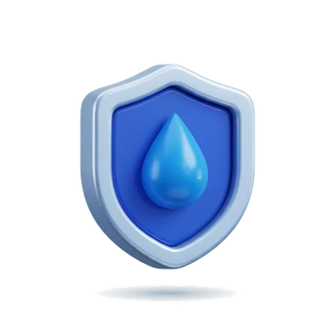
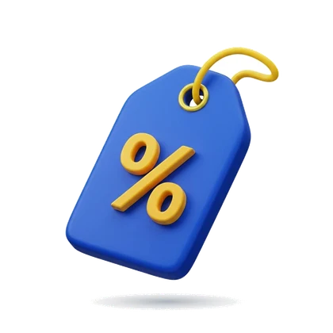
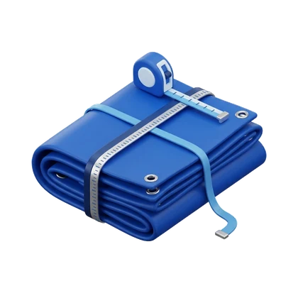
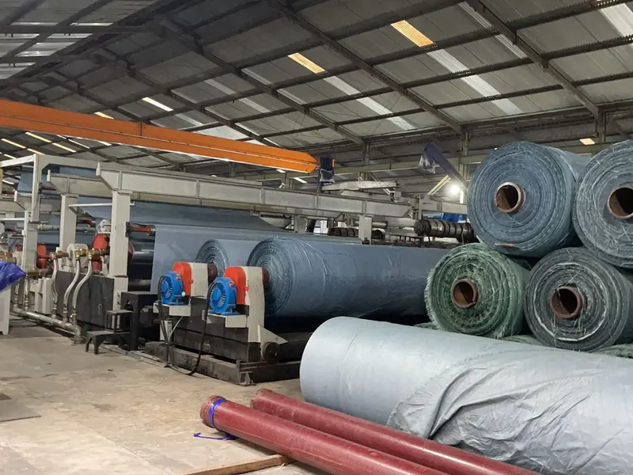
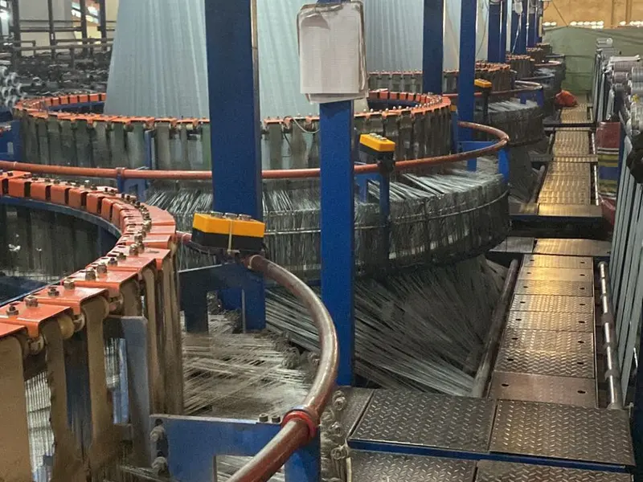

KENAPA MEMILIH YO TERPAL NUSANTARA RAYA?

100% Tahan Air
Permukaan dilaminasi ganda sehingga hujan deras dan genangan air tidak menembus — barang di bawahnya tetap kering dan aman.
Kuat & Anti Robek
Tenunan HDPE rapat dengan tepian lipat ganda, tidak mudah sobek meski sering dipasang, dilepas, dan dipindah.
Tahan UV & Panas
Diformulasi dengan UV stabilizer agar tidak cepat rapuh atau pudar meski dipasang di area terbuka yang terik.

Harga Pabrik
Diproduksi langsung oleh pabrik kami — harga lebih kompetitif untuk order partai besar tanpa menurunkan mutu.

Ukuran Custom
Bisa dipesan sesuai kebutuhan: ukuran, warna, ketebalan (GSM), hingga pencetakan logo untuk proyek Anda.
Layanan Responsif
Tim kami siap melayani konsultasi dan pengiriman mendesak 24/7 — siap mendukung operasional tambang & proyek.
STRUKTUR & KETEBALAN TERPAL KAMI



JARINGAN DISTRIBUSI NASIONAL

Pengiriman ke 34+ provinsi oleh agen lokal terpercaya dan armada cepat — aman melalui jalur darat, laut, maupun udara. Stok gudang besar membuat kami siap kirim partai besar mendesak.
- Agen lokal & armada sendiri
- Jalur darat, laut, dan udara
- Siap kirim mendesak untuk proyek